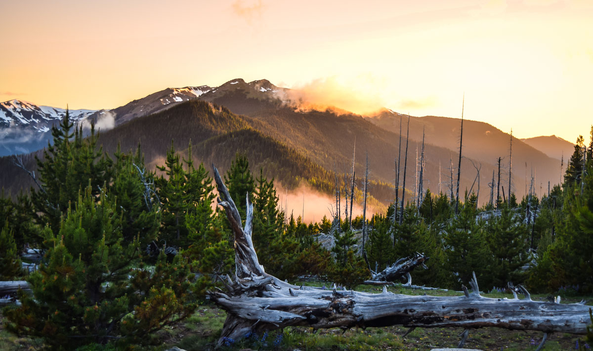

The Olympic National Park is on Washington’s Olympic Peninsula located in the Pacific Northwest. This park is known for its natural diversity and breathtaking views! It’s beauty ranges over 922,651 acres of preserved wilderness! In 1981, the historic Olympic National Park was named a world heritage site in recognition of it’s exceptional natural beauty and it’s exceptional diversity of plans and animals. Today, the Olympic peninsula is a dramatic and beautiful setting for many activities such as: hiking, boating, fishing, beach combing etc.
. | Plant Community Zones that can be found: | Forest Zone | 58% of Mount Rainier park is covered by forest. The Low elevation forests are distributed from the park's boundary from 1,700 feet to 2,700 feet elevation and are dominated by western hemlock, Douglas-fir, and western red cedar. As for Mid-elevation forests extend from 2,700 feet upward to 4,000 to 6,000 feet. For high elevation forests, they are characterized by subalpine fir, mountain hemlock, and Alaskan yellow cedar. Forest ages range from young stands (less than 100 years old) to old growth stands 1,000 or more years old. |
|---|---|---|
| Subapline Zone | In the high elevation forests, trees become less dense as the forest transitions into subalpine parkland. The subalpine parkland covers approximately 23 percent of the park. Vegetation in this zone is a mosaic of tree clumps and herbaceous meadows extending from forest line to tree line, or about 5,000 feet to about 7,000 feet elevation. Tree cover and the location of plant communities in this zone is limited by the depth and duration of the snowpack. | |
| Alpine Zone | The alpine zone extends from treelined to the mountain's summit. Permanent snow and ice cover about 50 percent of the zone. Whereas, Alpine vegetation covers the remainder, divided into four broad vegetation types. The type and location of vegetation in the alpine zone is controlled by length of the growing season, slope, and aspect. |